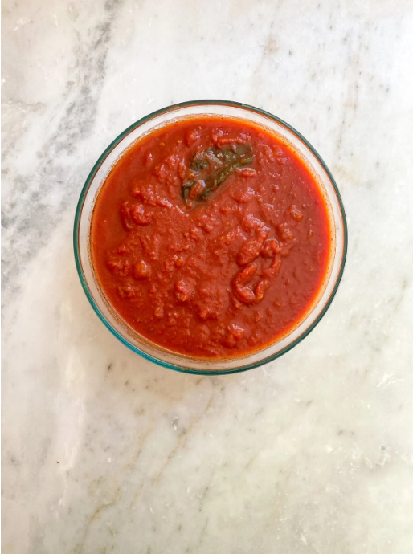
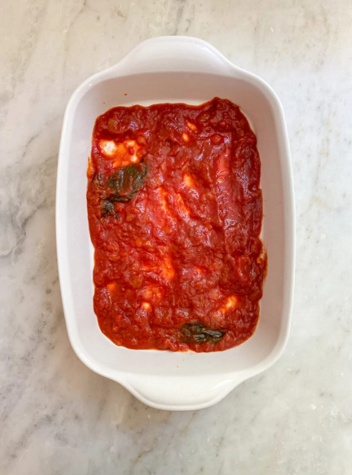
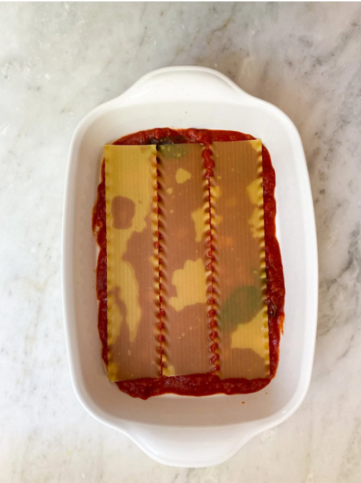
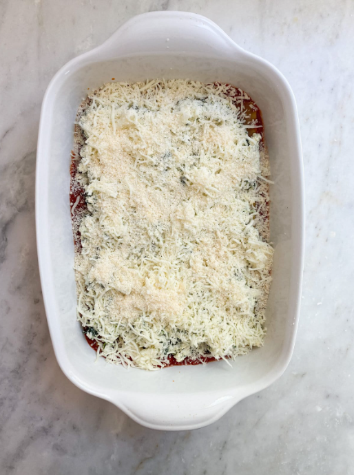

Instructions
- Heat the oven to 400 degrees.
-
Make a batch of the Sugo al Pomodoro (tomato sauce). Set aside.
- 
- Steam or saute spinach and remove liquid. Cool completely. Cut to create small pieces.
-
Mix the ricotta, egg, parmigiano, nutmeg (if using) and basil in a large bowl until combined. Once spinach is cooled, combine with ricotta mixture.
- Bring a large pot of salted water to a boil. (skip steps 5-6 if using no boil noodles)
- Cook the noodles (6 at a time for dried pasta) until they are tender but still underdone (they will finish cooking as the lasagna bakes). Set aside in a bowl of cold water until ready to use. This will prevent pasta from sticking.
-
Grease a 9X13 rectangular baking dish with the olive oil, add a large dollop of tomato sauce and spread it around the bottom of the pan.
- 
-
Put a layer of pasta (use 4-5 depending on size) in the dish (you may need to cut any excess to make them fit) top with a layer of tomato sauce, one-third of the spinach and ricotta mixture, and one-third of the grated mozzarella (use your fingers to spread it evenly). Season with salt and pepper if desired.
- 
-
Repeat the layers three times. For the top, cover with extra cheese.
- 
- The lasagna may be made ahead to this point, wrapped tightly and refrigerated for up to a day or frozen.
- Bake until the lasagna is bubbling and the cheese is melted and lightly browned on top, about 35 minutes. Remove from the oven and let rest a few minutes before serving, or cool completely, cover well, and refrigerate for up to 3 days, or freeze.